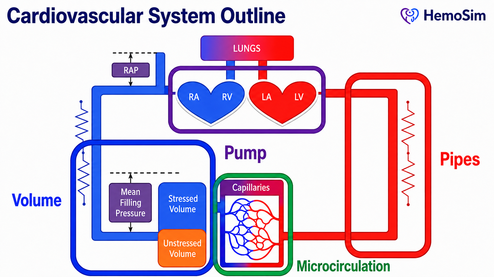
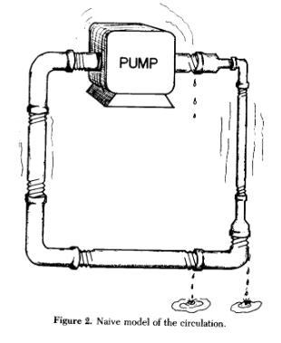
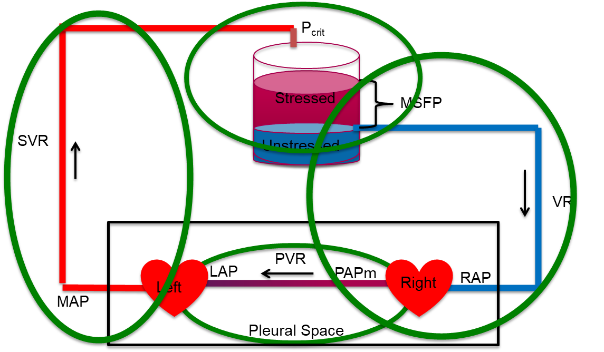
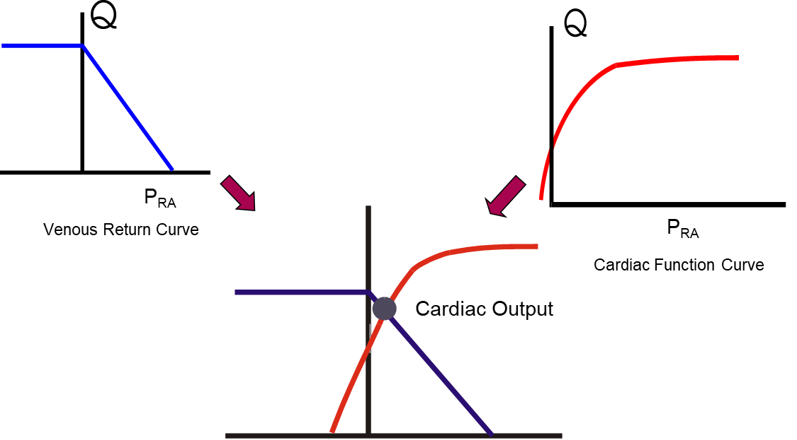
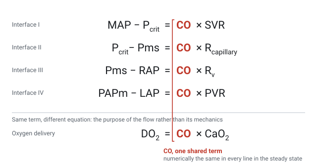

Module C1
Physiologic foundations
Module N4 (opens in a new tab) handed you a working map of the circulation: one closed loop, four interfaces, and a single equation that fits all of them. This module rebuilds each of these three principles from its foundations, says what each one actually claims, and says where each one stops being true.
Principle 1: the circulation has four interfaces
The cardiovascular system can be described as volume, a pump, pipes, and a microcirculation. Volume is the circulating blood, which sits overwhelmingly in the venous compartment and sets the pressure that drives return. The right side of the pump preserves this flow by maintaining a low downstream pressure, while the left side of the pump generates the pressure gradient that ultimately drives blood through the systemic circulation. The pipes, principally the arterioles, set how that gradient occurs and where flow is directed. The microcirculation is where the entire enterprise is finally cashed out as oxygen crossing a capillary wall.

Why a model at all, and why not a pump and pipes
Every clinician carries a mental model of the circulation in some form. A very simple model might consider the heart as a pump which drives fluid around a circuit of pipes. The pump sets the flow, the pipes set the pressure. It is a seductive image and one that Sylvester, Goldberg and Permutt opened their 1983 review by drawing so that they could take it apart.

It is worth spending time on why this model fails. There are at least five distinct failures, and each one maps onto a specific clinical mistake.
In humans, the pump does not set the flow. In a plumbing circuit the pump is the source of flow and raising its rate raises output. In the circulation the heart cannot eject volume that has not been delivered to it. Sheldon Magder puts the constraint in one sentence: the heart cannot pump out more volume than comes back. Contractility and heart rate determine how completely the heart clears what arrives, and beyond that point they buy nothing. This is why an inotrope in a patient with an empty venous reservoir produces a faster, emptier heart rather than more flow.
The venous pipes are mostly a reservoir. Some experts suggest that over 70 percent of total blood volume exists in the systemic veins and venules at low pressure. Calling those vessels pipes, while technically true, misrepresents the way they interact with the rest of the circulation. They are better understood as a capacitance reservoir: a compliant compartment built to hold large amounts of blood with relatively little rise in pressure. This is possible because the compliance of small venules and veins is almost forty times greater than that of arterial vessels.
Most of the volume in the human body does nothing. Only the fraction of blood that distends vessel walls beyond their unstretched shape generates a distending pressure, and only that fraction can drive flow. In the Novice modules, we called this distending volume stressed volume. Stressed volume is usually about 30 percent of total volume. Magder and De Varennes measured it directly in five patients undergoing hypothermic circulatory arrest by draining the patient's stressed volume into the bypass reservoir once the pump was stopped. In doing so, they found a stressed volume of around 20 mL/kg, which is about 30 percent of the total predicted blood volume. A plumbing model has no way of expressing the idea that two thirds of the fluid in the circuit is hemodynamically inert but recruitable. Once the venous side is understood as a reservoir rather than a simple pipe, the arterial side can be considered separately. Here the vessels behave more like distribution pipes, but even this analogy is insufficient.
In humans, flow through vessels can stop before pressure across the system reaches zero. In a rigid pipe, flow ceases when the pressure difference along it reaches zero. In the arterial circulation, small vessels can stop conducting flow while downstream pressure is still positive because they are collapsible, tone-generating structures. When vasomotor tone exceeds the local distending pressure needed to keep the lumen open, the vessel effectively narrows or collapses, similar to a Starling resistor. The clinical translation is that the downstream pressure for arterial flow is not the right atrial pressure, but rather the arteriolar critical closing pressure. We will discuss this concept in depth in Module C5 (opens in a new tab).
The circuit is regulated, not fixed. Pipe caliber is a property of the plumbing. Vessel caliber is a controlled variable, adjusted regionally by neural tone, circulating catecholamines, local metabolites and endothelial signaling. Two patients with identical cardiac output and identical mean arterial pressure can have entirely different distributions of that flow, and the plumbing model has no vocabulary for the difference.
| What plumbing erroneously predicts | What the circulation does | Where it misleads at the bedside |
|---|---|---|
| The pump sets flow | Return sets flow, the pump permits it | Inotropes for an underfilled ventricle don't improve flow |
| Pipes conduct, they do not store | Over 70 percent of volume is stored in compliant veins | Treating the venous system as passive |
| All fluid in the circuit drives flow | Only the stressed volume does, roughly 30 percent | Equating total body water with preload |
| Flow stops at zero gradient | Vessel characteristics create regions of flow that adhere to the principles of a Starling resistor | Calculating SVR using RAP as the downstream pressure |
| Vessel caliber is fixed | Vessels are actively regulated, regionally | Assuming a good MAP means good regional flow and perfusion |
The four-interface model earns its place by being the simplest model that avoids all five of these errors while remaining coarse enough to apply conceptually, in ways that help understand and guide clinical reasoning.
The four interfaces
An interface, in this model, is not simply a location. It is a boundary that satisfies three conditions.
- There is an upstream pressure and a downstream pressure.
- There is a resistance between them across which the gradient is dissipated.
- The two sides can become uncoupled, meaning that the upstream side can be performing adequately by its own measures while the handoff across the boundary fails.
The third condition is what makes the model diagnostic rather than merely descriptive.

| Interface | Upstream pressure | Downstream pressure | Resistance | What uncoupling looks like |
|---|---|---|---|---|
| I. LV to arterial system | MAP (Mean arterial pressure) | Pcrit (Critical closing pressure in the arterial tree) | SVR (Systemic vascular resistance) | Adequate contractility, inadequate stroke volume, because arterial load and ventricular elastance are mismatched |
| II. Arterioles to capillaries | Pcrit | Pms (Mean systemic filling pressure) | Arteriolar and capillary resistance | Acceptable MAP with prolonged capillary refill and mottling, the macro-to-micro dissociation |
| III. Capillaries to right atrium | Pms | RAP (Right atrial pressure) | Rv (Venous resistance) | Rising RAP acting as tissue afterload, impaired drainage and interstitial edema despite stable macro-hemodynamics |
| IV. RV to pulmonary artery | PAPm (Mean pulmonary artery pressure) | LAP (Left atrial pressure) | PVR (Pulmonary vascular resistance) | A right ventricle that cannot raise its output against a rising pulmonary load, with backward congestion and decreased LV filling |
Two structural facts about this table are worth stating.
First, the four interfaces are in series around a closed loop, and their pressure terms interlock. Interface I ends at Pcrit, which is where Interface II begins. Interface II ends at Pms, which is where Interface III begins. Add the systemic drops together and the intermediate terms cancel:
It is vital to recognize what this sum actually means. The drop in pressure from Pcrit to Pms does not occur on account of a vascular resistance per se, meaning that resistance, in the conventional sense, is not dissipating that gradient in the way it may appear to the casual observer. Instead, the drop occurs because of a vascular waterfall, a region where flow is governed by a maximal gradient which is dependent on the physical properties of the vessel, irrespective of the downstream pressure below the waterfall. Maas and colleagues measured both ends at the bedside in ventilated postoperative patients and found the two real resistances, arterial and venous, summing to 11.0 mmHg·min/L against a conventionally calculated total systemic vascular resistance of 16.6. The difference is the waterfall, which the conventional calculation silently books as resistance. Despite the waterfall effect, the algebra above still holds and is still the right way to keep the interfaces in order. It is the interpretation of how the waterfall affects flow that needs care. It is also important to understand how manipulations to Pcrit can affect hemodynamic perfusion significantly, despite seemingly inconsequential changes to the upstream MAP or the downstream RAP. Module C5 (opens in a new tab) derives the critical closing pressure and works the numbers.
This is why measuring the ends of the loop, which is what a mean arterial pressure and a right atrial pressure give you, tells you the total but not the distribution. Two patients with identical MAP and identical RAP can have completely different splits of that gradient across interfaces, owing to different diagnoses.
Second, notice that Interface IV is not in series with the systemic gradient in the same arithmetic sense. It has its own upstream and downstream pressures, PAPm and LAP, and its own resistance. What ties it to the other three is cardiac output, which in the steady state is identical on both sides of the heart. That single shared term is what makes a right-sided problem present as a left-sided one. A right ventricle that cannot generate flow across a high pulmonary vascular resistance limits left ventricular filling. No amount of left-sided contractility can change that.
As you proceed through the modules, use the interfaces to ask which one is disrupted and creating the shock state. Approaching the circulation interface by interface allows therapy to target the weakest link, rather than applying a reflexive, population-level pressure target to every patient in the ICU.
One final structural point. The thoracic cavity contains both the right and left heart and the entire pulmonary circuit, and every breath, spontaneous or mechanical, changes the pressure surrounding all of them at the same time. Heart-lung interaction is a perturbation applied simultaneously to Interfaces I, III and IV. We explore this further in Module C12 (opens in a new tab) and Module C13 (opens in a new tab).
Principle 2: the loop is closed, so return and output must balance
The second principle is simple: the circulation runs through a closed loop system. Over any meaningful interval, whatever leaves the left ventricle returns to the right atrium. Venous return and cardiac output are not two problems. They are one quantity viewed from two ends.

The Novice modules note this implicitly in Module N5 (opens in a new tab), where the venous return curve and the cardiac function curve intersect at a single point that marks the cardiac output. A few refinements make this principle useful to us as a tool.
First, right and left ventricular outputs are equal when averaged over several cardiac cycles, and they are routinely unequal on a beat-to-beat basis. This phenomenon forms the basis for measuring fluid responsiveness and the other dynamic indices covered later in Module C11 (opens in a new tab), which includes the passive leg raise and inferior vena cava distensibility, Module C12 (opens in a new tab), which explains the heart-lung mechanism, and Module C13 (opens in a new tab), which covers systolic and pulse pressure variation.
Second, there remains some debate about the role of right atrial pressure as a determinant of cardiac output. In Guyton's original experiments on the matter, published in 1955, he concluded that right atrial pressure acts as a back pressure limiting venous return. Beard and Feigl reanalyzed Guyton's own model and data and pointed out that in those experiments cardiac output was set by an artificial pump and was therefore the independent variable, while right atrial pressure was the dependent one. They argued that the observed rise in right atrial pressure as cardiac output fell is explained by redistribution of blood volume within a closed circulation of fixed total volume, not by right atrial pressure restricting return, and that the concept should be removed from teaching. Others have argued the opposite with equal force, and the exchange was published as a formal CrossTalk debate. A defensible middle ground is to acknowledge that central venous pressure is an important physiologic parameter, but that it may not be an independent variable that, on its own, determines cardiac output.
Third, recall that Pms represents the upstream pressure that drives venous return. It is a property of the stressed volume and the compliance of the vessels holding it. It is not a property of the heart.
As cited in the Novice modules, Pms is generally given as around 8 to 10 mmHg. This estimate comes from calculations performed on classical animal preparations. Human bedside estimates run considerably higher. Maas, Pinsky and colleagues studied eleven mechanically ventilated postoperative cardiac surgical patients across three states, supine, thirty degrees head-up tilt, and after 500 mL of colloid, and derived Pms three ways. Inspiratory hold maneuvers gave a mean of around 21 mmHg, an arm equilibrium pressure method gave about 20 mmHg, and a model analog suggested approximately 15 mmHg. All three tracked the same direction of change, and all three suggest that estimates from animal preparations may be lower than human values.
Two lessons sit in those numbers. The first is that a textbook value obtained in an anesthetized animal should not be carried blindly to a ventilated patient on vasopressors. The second is more generally useful: the three methods tested by Maas and colleagues disagreed on the absolute value and agreed on the direction of change. That pattern recurs throughout hemodynamic monitoring, and it is the reason this curriculum repeatedly favors trends over absolute numbers.
The venous return curve, its slope, its plateau and the manipulation of Pms are the subject of Module C7 (opens in a new tab) and Module C8 (opens in a new tab), and the full treatment of the intersection is Module C10 (opens in a new tab).
Principle 3: one hydraulic relationship describes every interface
The third principle is the one most often quoted and least often examined. It states that across every interface, the pressure gradient equals cardiac output multiplied by the resistance of that interface. It is usually attributed to Hagen and Poiseuille, and the attribution is worth unpacking, because what the law actually says and what we use it for are not the same thing.
Poiseuille's law in full states that flow through a tube is proportional to the pressure gradient and to the fourth power of the radius, and inversely proportional to viscosity and length:
Secomb's review of hemodynamics states the five conditions the derivation requires: that the tube is a uniform rigid circular cylinder, that the fluid is Newtonian (where shear stress is directly proportional to shear rate), that flow is steady, that flow is laminar, and that flow is not subject to entrance effects. The human circulation violates all five. Vessels are distensible and taper as they move away from the heart. Blood has significant non-Newtonian properties, although it is reasonable to treat it as Newtonian in the larger arteries. Flow is pulsatile rather than steady. Flow is disturbed at bifurcations and in the great vessels.
None of that makes the clinical form useless, but it does change what the form is. The equation we introduced in Module N3 (opens in a new tab), ΔP = Q × R, is not a physical law being applied. It is a definition of R. Resistance in hemodynamics is not measured. It is calculated, as whatever number makes the observed gradient and the observed flow consistent. Every physical effect the equation ignores, including pulsatility, distensibility, non-Newtonian behavior and turbulence, is absorbed silently into that one number, R. The equation is exact by construction and therefore explains nothing on its own. What it does is force the three quantities into a fixed relationship, so that knowing any two constrains the third. That is a genuinely powerful bedside property, and it is a different kind of power than a mechanism.
Two consequences of taking the fourth power seriously
Although the human circulation does not satisfy the conditions required to apply Poiseuille's law fully, the radius dependence it describes remains directionally right and clinically enormous within the vasculature. Resistance varies with the inverse fourth power of diameter: a 16 percent decrease in diameter doubles flow resistance. This is why a small change in the luminal size of an arteriole, caused by arteriolar smooth muscle, can dominate systemic resistance. And it is why the pressure drop in the systemic circulation is concentrated on the arterial side, specifically in the small arteries and arterioles.
It also explains an asymmetry on the venous side that most people are unaware of. The venules and small veins have an enormous aggregate cross-sectional area and therefore contribute very little to the resistance to venous return, despite holding most of the blood. The resistance that matters on the venous side sits in the large veins and the venae cavae, where cross-sectional area is small. Volume and resistance live in different parts of the venous system, which is why a maneuver that changes venous capacitance and a maneuver that changes venous resistance are not the same maneuver.
Resistance is calculated, and what it is calculated from matters
The systemic vascular resistance reported by most clinicians is computed as follows:
Compare that with the Interface I relationship in the table above and the discrepancy becomes apparent. The physiologic downstream pressure for arterial flow is not the right atrial pressure. Rather, it is the arteriolar critical closing pressure (Pcrit).
Physiologically, the concept of Pcrit can be challenging. We review it briefly here. For the full derivation, see Module C5 (opens in a new tab), and for the waterfall at the arteriolar outlet, Module C6 (opens in a new tab). When the pressure surrounding a collapsible vessel exceeds the pressure inside it, or when the active inward tension of the vessel wall surpasses the outward intraluminal pressure, the transmural pressure of that vessel falls to or below zero. The result is that the vessel collapses. When this occurs, flow through that segment is governed by the difference between the upstream pressure and the surrounding inward pressure. Lowering the downstream pressure further produces no additional flow. Permutt and Riley described this as a vascular waterfall, by analogy with the fact that the flow over a waterfall is governed by the drop from the river upstream to the lip of the falls. The height of the river below the waterfall has no effect on how much water flows over its lip. This phenomenon is also known as a Starling resistor.
Because Pcrit is normally well above RAP, and because vasoactive drugs move Pcrit, the calculated SVR, read as a measure of arteriolar tone, systematically misstates the arterial resistance. Sheldon Magder has made this argument at length in the context of what a blood pressure target actually means (reference 16). The practical instruction is not to discard SVR, but to stop treating it as a measurement of arteriolar tone, and to remember that the error between the calculated SVR and the true arterial resistance is likely to be greatest when MAP or flow is low, because that is when MAP sits closest to Pcrit.
The same relationship generates three vascular waterfalls
The concept of Pcrit is not an exotic special case. It is the standard behavior of a collapsible vessel, and it occurs at three separate places in the loop that this curriculum cares about.
| Where | Collapsible segment | Surrounding pressure | Consequence |
|---|---|---|---|
| Interface II | Arterioles | Tissue pressure plus intrinsic vessel tone | Arterial flow ceases at a positive pressure, so the true perfusion gradient is MAP minus Pcrit |
| Interface III | Great veins entering the thorax | Abdominal pressure and pleural pressure | The RAP below which a lower pressure recruits no further flow. This is the plateau of the venous return curve (see Module C8 (opens in a new tab)). |
| Interface IV | Pulmonary capillaries | Alveolar pressure | The West zone behavior that determines whether a wedge pressure reflects left atrial pressure |
Recognizing that these are one phenomenon rather than three unrelated facts is a large part of what the Core tier is designed to achieve. Each is developed separately later, in Module C6 (opens in a new tab), Module C8 (opens in a new tab) and Module C15 (opens in a new tab) respectively, but the physics is identical and learning it once is enough.
Cardiac output is the common denominator
Writing the relationship out for each interface produces four equations that differ only in which pressures and which resistance appear. Cardiac output appears in all of them, and in the steady state it is numerically the same in all of them.

Two things follow. The first is arithmetic. Because cardiac output is common, the ratio of any two pressure gradients equals the ratio of the two resistances, without needing to know cardiac output at all. If the arterial gradient is large and the venous gradient is small, the arterial resistance is proportionately larger, and that inference is available from pressures alone.
The second is why this module sits where it does in the curriculum. Oxygen delivery is the organizing goal of the whole enterprise, and DO2 equals cardiac output multiplied by arterial oxygen content. The same term that appears in every hydraulic equation appears in the delivery equation. Cardiac output is the hinge between the mechanics of the circulation and the purpose of the circulation, which is why so much of hemodynamic assessment reduces to establishing what it is and what is limiting it.
What the three principles buy you
Taken together the three principles are not three facts. They are a method, and each contributes uniquely to the overall conceptual framework of this curriculum.
Principle 1 tells you where to look. Shock is a boundary failure, and the four interfaces enumerate the boundaries. When the Novice method asks you to create a physiologic hypothesis, the useful form of that hypothesis is a named interface, because a named interface allows the clinician to derive a test to confirm the interface and a therapy to address it.
Principle 2 tells you what cannot be true. Return and output balance over time, so any account of a patient that requires them not to balance is wrong. It also tells you that the balance is struck at a single operating point that two functions determine jointly, so an intervention that moves one function has predictable effects on both flow and filling pressure. Watching which of the two moved, rather than watching either alone, is the discipline.
Principle 3 tells you how to reason quantitatively once you have located the problem, and, just as importantly, how far that reasoning can be trusted. Gradient equals flow times resistance is exact by definition and empty by itself. Its value lies in constraining three quantities so that two of them determine the third, and its danger lies in the resistances, which are residual terms that quietly absorb several effects the equation ignores.
Those three tools describe a circulation. They do not yet describe a patient. The next module takes the model to the bedside and asks what happens when the one number everybody reaches for first, the blood pressure, looks acceptable and the patient is nonetheless in shock.
References
- Sylvester JT, Goldberg HS, Permutt S. The role of the vasculature in the regulation of cardiac output. Clin Chest Med. 1983;4(2):111-126. PMID 6342918.
- Magder S. Volume and its relationship to cardiac output and venous return. Crit Care. 2016;20(1):271. doi:10.1186/s13054-016-1438-7. Free full text.
- Magder S, De Varennes B. Clinical death and the measurement of stressed vascular volume. Crit Care Med. 1998;26(6):1061-1064. doi:10.1097/00003246-199806000-00028.
- Magder S. Starling resistor versus compliance. Which explains the zero-flow pressure of a dynamic arterial pressure-flow relation? Circ Res. 1990;67(1):209-220. doi:10.1161/01.RES.67.1.209.
- Rola P, Kattan E, Siuba MT, Haycock K, Crager S, Spiegel R, Hockstein M, Bhardwaj V, Miller A, Kenny JE, Ospina-Tascon GA, Hernandez G. Point of View: A Holistic Four-Interface Conceptual Model for Personalizing Shock Resuscitation. J Pers Med. 2025;15(5):207. doi:10.3390/jpm15050207. Free full text.
- Michard F. Changes in arterial pressure during mechanical ventilation. Anesthesiology. 2005;103(2):419-428. doi:10.1097/00000542-200508000-00026.
- Guyton AC. Determination of cardiac output by equating venous return curves with cardiac response curves. Physiol Rev. 1955;35(1):123-129. doi:10.1152/physrev.1955.35.1.123.
- Beard DA, Feigl EO. Understanding Guyton's venous return curves. Am J Physiol Heart Circ Physiol. 2011;301(3):H629-H633. doi:10.1152/ajpheart.00228.2011. Free full text.
- Andrew P. CrossTalk proposal: Guyton's venous return curves should be taught. J Physiol. 2013;591(23):5791-5793. doi:10.1113/jphysiol.2013.261438. Free full text.
- Beard DA, Feigl EO. CrossTalk opposing view: Guyton's venous return curves should not be taught. J Physiol. 2013;591(23):5795-5797. doi:10.1113/jphysiol.2013.260034. Free full text.
- Berlin DA, Bakker J. Starling curves and central venous pressure. Crit Care. 2015;19(1):55. doi:10.1186/s13054-015-0776-1. Free full text.
- Magder S. Bench-to-bedside review: an approach to hemodynamic monitoring, Guyton at the bedside. Crit Care. 2012;16(5):236. doi:10.1186/cc11395. Free full text.
- Maas JJ, Pinsky MR, Geerts BF, de Wilde RB, Jansen JR. Estimation of mean systemic filling pressure in postoperative cardiac surgery patients with three methods. Intensive Care Med. 2012;38(9):1452-1460. doi:10.1007/s00134-012-2586-0. Free full text.
- Maas JJ, de Wilde RB, Aarts LP, Pinsky MR, Jansen JR. Determination of vascular waterfall phenomenon by bedside measurement of mean systemic filling pressure and critical closing pressure in the intensive care unit. Anesth Analg. 2012;114(4):803-810. doi:10.1213/ANE.0b013e318247fa44. Free full text.
- Secomb TW. Hemodynamics. Compr Physiol. 2016;6(2):975-1003. doi:10.1002/cphy.c150038. Free full text.
- Magder S. The highs and lows of blood pressure: toward meaningful clinical targets in patients with shock. Crit Care Med. 2014;42(5):1241-1251. doi:10.1097/CCM.0000000000000324.
- Andrei S, Bar S, Nguyen M, Bouhemad B, Guinot PG. Effect of norepinephrine on the vascular waterfall and tissue perfusion in vasoplegic hypotensive patients: a prospective, observational, applied physiology study in cardiac surgery. Intensive Care Med Exp. 2023;11(1):52. doi:10.1186/s40635-023-00539-x. Free full text.
- Permutt S, Riley RL. Hemodynamics of collapsible vessels with tone: the vascular waterfall. J Appl Physiol. 1963;18:924-932. doi:10.1152/jappl.1963.18.5.924.